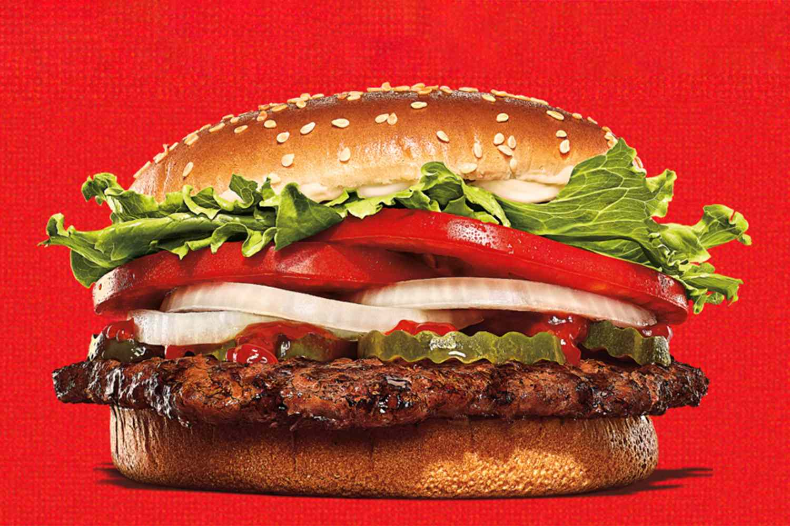
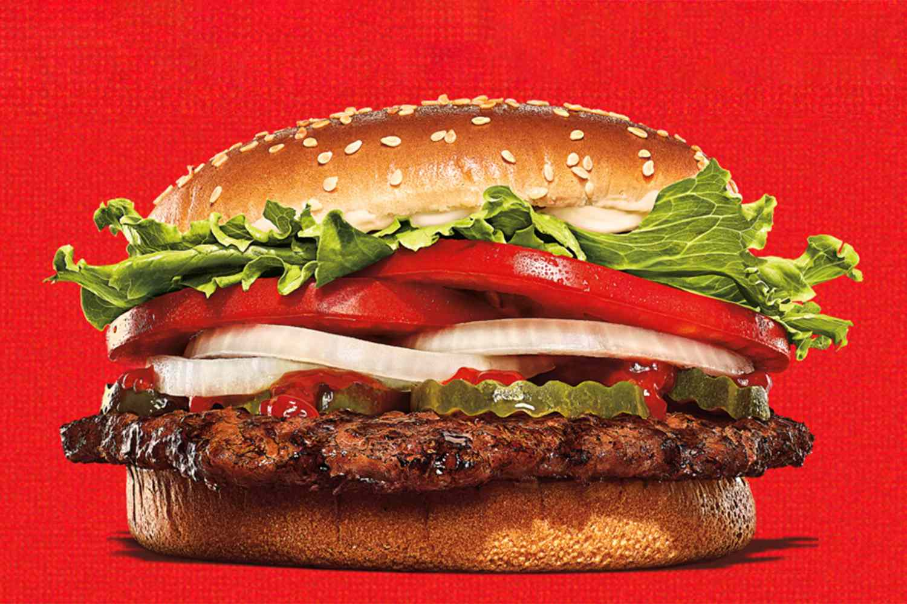

Maxwell Lee
A Whopper is a popular sandwich served at Burger King, a fast food chain that is well known for its burgers. The Whopper is a signature item on the menu and is made with a flame-grilled beef patty, topped with lettuce, tomato, onion, pickles, mayonnaise, and ketchup, and served on a sesame seed bun. One of the defining characteristics of the Whopper is its flame-grilled beef patty, which gives the sandwich a distinctive smoky flavor. The patty is made from high-quality beef that is seasoned with a blend of spices to enhance its flavor. Burger King uses a special grilling technique that sears the beef patty, sealing in the juices and creating a slightly charred exterior. The toppings on the Whopper are also noteworthy. The lettuce and tomato provide a fresh, crisp contrast to the savory beef, while the pickles add a slightly sour note that complements the other flavors. The mayonnaise and ketchup provide a creamy and tangy sauce that ties everything together. Additionally, the sesame seed bun is soft and fluffy, providing a perfect base for the other ingredients. The Whopper is available in a variety of sizes, ranging from a single patty to a double, triple, or even quadruple patty option. Customers can also customize their Whopper with additional toppings, such as bacon, cheese, or jalapeños, to create a personalized sandwich. One of the reasons why the Whopper is so popular is because it offers a satisfying and filling meal at an affordable price. It is a convenient option for people on the go who want a quick and satisfying meal without spending a lot of money. The Whopper is also a nostalgic favorite for many people, who grew up eating it and have fond memories associated with the sandwich. In conclusion, the Whopper is a classic sandwich that has stood the test of time. It is beloved by many for its flavorful beef patty, fresh toppings, and affordable price point. Whether you are in the mood for a quick and satisfying meal or just craving a nostalgic favorite, the Whopper is sure to hit the spot.
whopper
whopper
Experience
Barista
• made personalized caffienated drinks for customers
• utilized creativity in my work
• a vast knowledge of mixing drinks
Volunteering at a Summer Camp for K-12 Students
• worked with kids
• helped organize the summer camp
• helped students learn common core material
• personalized teaching for each student
Education
UC Riverside
Portfolio



